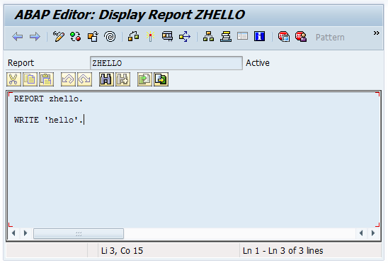

& abapOpenChecks
| @LarsHvam | |
| larshp | |
|
Mandatory Disclaimer Nothing recommended. But try it out in a sandbox to see if it works. It is open source, so if you find an error, feel free to fix or open issue on github. |
Git client for ABAP | |
| started 2 years ago | |
| 409 commits | |
| 7 contributors | |
| ~23000 lines | |
|
Design goals
|
cl_http_client=>create_by_url(
EXPORTING
url = 'https://github.com'
ssl_id = 'ANONYM'
IMPORTING
client = li_client ).
li_client->request->set_cdata( '' ).
li_client->request->set_header_field(
name = '~request_method'
value = 'GET' ).
li_client->request->set_header_field(
name = 'user-agent'
value = 'git/abapGitv1.9.7' ).
li_client->request->set_header_field(
name = '~request_uri'
value = '/larshp/abapOpenChecks.git/info/refs?service=git-upload-pack' ).
li_client->send( ).
001e# service=git-upload-pack 000000fb868c5c06d2b51f6b83668f80922260f42a7ff4ca HEAD multi_ack thin-pack ... 003f868c5c06d2b51f6b83668f80922260f42a7ff4ca refs/heads/master 0040c1398119983b0ae48ec4091d9519194768a71bae refs/pull/268/head 0000

REPORT zhello.
WRITE 'hello'.
<?xml version="1.0" encoding="utf-8"?>
<abapGit version="v1.0.0" serializer="LCL_OBJECT_PROG" serializer_version="v1.0.0">
<asx:abap xmlns:asx="http://www.sap.com/abapxml" version="1.0">
<asx:values>
<PROGDIR>
<NAME>ZHELLO</NAME>
<STATE>A</STATE>
<SQLX/>
<EDTX/>
<VARCL>X</VARCL>
<DBAPL/>
<DBNA/>
<CLAS/>
<TYPE/>
<OCCURS/>
<SUBC>1</SUBC>
<APPL/>
<SECU/>
<CNAM/>
<CDAT>0000-00-00</CDAT>
<UNAM/>
<UDAT>0000-00-00</UDAT>
<VERN/>
<LEVL/>
<RSTAT/>
<RMAND/>
<RLOAD>E</RLOAD>
<FIXPT>X</FIXPT>
<SSET/>
<SDATE>0000-00-00</SDATE>
<STIME/>
<IDATE>0000-00-00</IDATE>
<ITIME/>
<LDBNAME/>
<UCCHECK>X</UCCHECK>
</PROGDIR>
<DYNPROS/>
<CUA>
<ADM>
<ACTCODE/>
<MENCODE/>
<PFKCODE/>
<DEFAULTACT/>
<DEFAULTPFK/>
<MOD_LANGU/>
</ADM>
<STA/>
<FUN/>
<MEN/>
<MTX/>
<ACT/>
<BUT/>
<PFK/>
<SET/>
<DOC/>
<TIT/>
<BIV/>
</CUA>
<TPOOL>
<item>
<ID>R</ID>
<KEY/>
<ENTRY>test</ENTRY>
<LENGTH>4</LENGTH>
<SPLIT/>
</item>
</TPOOL>
</asx:values>
</asx:abap>
</abapGit>
| ACID | MSAG | SPLO | TYPE |
| AUTH | NROB | SSFO | VCLS |
| CLAS | PARA | SSST | VIEW |
| DOMA | PROG | SUSC | W3HT |
| DTEL | SFBF | SUSO | W3MI |
| ENQU | SFBS | TABL | WDYA |
| IARP | SFSW | TOBJ | WDYN |
| IASP | SHLP | TRAN | XSLT |
| IATU | SICF | TTYP |
|
Updated list: https://github.com/larshp/abapGit/wiki/Supported-object-types and even more: https://github.com/larshp/abapGit-Plugins by Oliver Jägle |